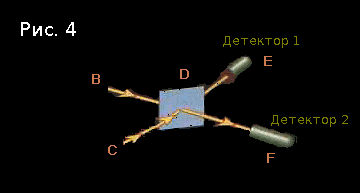
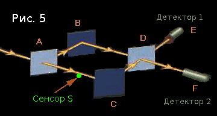

Квантовая механика для всех, даром, и пусть никто не уйдёт обиженным: часть вторая
Здравствуйте! Квантовая механика продолжается во второй части цикла Элиезера Юдковски, и сегодня вы узнаете немного больше о конфигурациях, а также поймёте, почему процесс наблюдения влияет на объект наблюдения. Критики в адрес непонятливого человечества, само собой, тоже будет предостаточно. В общем, не проходите мимо!
Конфигурации как комбинации
Одним из ключевых моментов в квантовой механике является то, что конфигурации всегда описывают состояние более чем одной частицы. Посмотрите: в этот раз мы немного усложним эксперимент из первой статьи, одновременно послав два фотона в D — из точек B и C.

Начальная конфигурация — «фотон летит из B в D, и фотон летит из C в D». Как и в прошлый раз, будем считать, что её амплитуда равна (-1 + 0i).
В D находится уже знакомое нам полупосеребрённое зеркало, которое умножает амплитуду на 1 при отражении фотона, и на −i — при прохождении фотона (в оригинале было i, но это не совсем верно — прим. пер.).
Рассмотрим четыре случая:
Обратите внимание на то, что абсолютно разные ситуации в первом и четвёртом случаях привели к одной и той же результирующей конфигурации! Поэтому, когда мы будем считать итоговое значение конфигурации «фотон летит в E, и фотон летит в F», мы получим (1 + 0i) + (−1 + 0i) = 0. А это значит, что такого никогда не случится. Оба детектора не могут сработать одновременно.
Из этого эксперимента следует извлечь один важный урок: фотоны неразличимы. Если бы существовало хоть малейшее отличие между двумя фотонами, результат опыта был бы совершенно иным.
В классической модели мира, где амплитуды можно считать вероятностями, каждый волен сам выбирать способ группировки исходов. Поясню: я мог бы считать все четыре исхода, описанных выше, различными; мог бы выделить только два исхода («в каждый детектор прилетает по фотону» и «оба фотона прилетают в один детектор»); мог бы поступить как-то ещё. И ничего бы не изменилось. Точно так же, если мне нужно посчитать вероятность того, что на двух игральных костях выпадут нечётные числа, я могу составить табличку из 36 возможных результатов броска — а могу сразу поделить грани на «чётные» и «нечётные» и уменьшить количество исходов до четырёх.
Почему это не работает в квантовой модели? Потому что вероятности событий нелинейным образом зависят от амплитуд, а квадрат суммы, как известно, нельзя заменить суммой квадратов:
((2 + i) + (1 + −i))2 = (3 + 0i)2 = 32 + 02 = 9
(2 + i)2 + (1 + −i)2 = (22 + 12) + (12 + (−1)2) = (4 + 1) + (1 + 1) = 7
Из этого следует, что мы можем экспериментально установить, какие конфигурации являются различными, а какие — нет. В частности, эти конфигурации идентичны:
А вот и второй важный урок (на который я намекнул ещё в первом абзаце, и о котором я подробно поговорю в дальнейшем): законы квантовой механики неприменимы к отдельным частицам. Стратегия «разделяй и властвуй» тут не срабатывает. Это большое искушение — без особых трудностей рассмотреть поведение каждой элементарной частицы, а затем каким-либо образом сложить цельную картину мира из кусочков мозаики… Но именно этот подход столько лет тормозил развитие квантовой механики.
Различные конфигурации
Сразу возьмём быка за рога. Когда две конфигурации являются различными?
Чтобы ответить на этот вопрос, проведём следующий эксперимент:

В точке S находится сенсор. Единственное, что он делает — переходит в другое состояние при прохождении через него фотона. Будем считать, что в начале эксперимента сенсор находится в состоянии НЕТ, а пролетающий фотон приводит его в состояние ДА.
Итак, начальная конфигурация:
Что случится после того, как фотон прилетит в A? В прошлой версии этого эксперимента — без сенсора — возможными конфигурациями были «фотон летит из A в B» с амплитудой i и «фотон летит из A в C» с амплитудой −1. Но так как каждая конфигурация описывает полное состояние системы, мы должны включить состояние сенсора в их описания. Итак:
Теперь вступают в игру зеркала B и C:
Наконец, полу-зеркало D:
Вспомните: когда мы проводили этот эксперимент без сенсора, исходы #1 и #3 «нейтрализовали» друг друга, потому что соответствующие им конфигурации были идентичными. Но теперь они не идентичны — а всё благодаря сенсору S. Квадраты модулей амплитуд всех четырёх конфигураций равны, и если бы вы на самом деле провели этот опыт, то убедились бы, что оба детектора срабатывают с одинаковой частотой. (Если я ничего не напутал, конечно же. Лично я опыта не проводил.)
То же случится, если нам безразлично состояние сенсора. Законам физики точно так же безразличны наши мысли.
То же случится, если мы даже не удосужимся проверить, пролетел ли фотон через S. Конфигурации #1 и #3 различны — больше ничего не нужно.
То же случится, если мы вообще не знаем о существовании S.
То же случится, если эксперимент проводится в космосе, а S сигнализирует о своём состоянии посылкой одного-единственного фотона в одном направлении, если он был в состоянии ДА, и в другом — если он был в состоянии НЕТ. Для нас его все равно что нет; но одна частица в целой Вселенной находится в другом месте, и этого достаточно.
(Но то же не случится, если S имеет достаточно большую протяжённость в пространстве конфигураций. В этом случае воздействия фотона на S может не хватить на то, чтобы образовать отдельный исход. Я просто хотел напомнить о том, что на самом деле пространство конфигураций непрерывно, а не дискретно.)
А теперь давайте попробуем представить, о чём думает человек, проводящий эксперимент наподобие этого, если он не имеет никакого понятия об амплитудах и конфигурациях.
Наш экспериментатор обнаруживает, что а) фотоны не желают приходить в первый детектор, и б) фотоны внезапно начинают приходить в оба детектора, если один из путей заблокирован, но они никогда не разделяются. Хм.
Во-первых, он полагает, что имеет дело с частицами — ведь всё, что он наблюдает, это отдельные фотоны, каждый из которых находится (как он считает) в строго определённой позиции в каждый момент времени. Это логично, хоть и неверно.
Во-вторых, он уверен в существовании некоего… таинственного феномена… который не даёт фотону оказаться в первом детекторе. Для этого крайне важно, чтобы фотон имел возможность оказаться в любом из детекторов. Даже если в итоге он всегда выбирает второй.
Хитроумный фотон не только хочет, чтобы ему не препятствовали — он ещё и знает, что путь заблокирован, даже не идя по нему. Что за чертовщина здесь творится?
Наш экспериментатор решает поместить сенсор между A и C, чтобы проследить за тем, какой путь выбирает фотон каждый раз.

И таинственный феномен как ветром сдуло.
От такого и параноиком недолго стать.
В двадцать первом веке мы уже догадались, что «знание» того, что случилось с фотоном, равносильно изменению положения септильонов частиц в нашем мозгу. Если даже одного фотона, выпущенного сенсором в неизвестном направлении, достаточно, чтобы сделать конфигурации различными и помешать сокращению амплитуд, то уж сложного измерительного прибора, с помощью которого мы будем ловить фотон, точно достаточно.
Но если вы до всего этого не додумались, дела ваши плохи. Мысли ваши, скорее всего, пойдут в несколько ином направлении.
Фотон не просто желает иметь физическую возможность пойти по обоим путям — ведь сенсор полностью прозрачен для него. Всё гораздо хуже. Фотон не хочет, чтобы вы знали, где он и что он делает.
Если вы будете точно знать, что фотон пролетел тут, все другие возможности станут несколько неправдоподобными. Это мешает фотону не меньше, чем настоящая преграда на его пути. Важно не то, что случилось, а то, что могло случиться. Что вы знаете — вернее, то, что вы теоритически можете знать — является определяющим фактором.
Срочно в номер! Сознательное понимание способно влиять на экспериментальные результаты! Разум всё-таки первичен!
Н-да. Неужели так сложно было заметить, что простой камень, «наблюдающий» за ходом эксперимента, оказывает на него такое же влияние? Быть может, у камней тоже есть сознание?
Впрочем, задним числом все умны. Не думаете ли вы, что у вас получилось бы лучше, чем у Джона фон Неймана, если бы вы жили в то время? Главным тогда было то, что теория, пусть и бредовая, давала верные предсказания; не чини того, что не сломано, и всё будет хорошо.